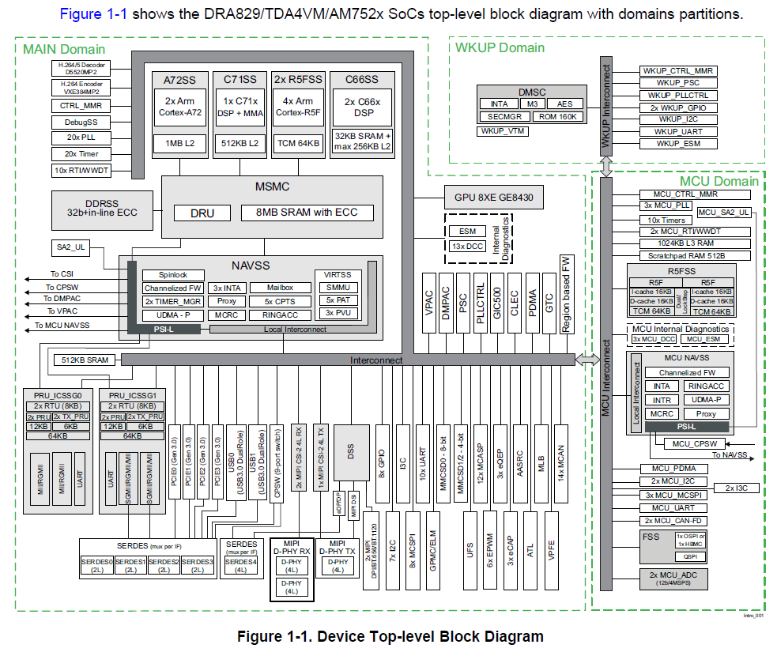
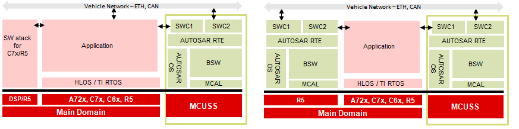

Introduction
The MCUSW do not provide Port MCAL drivers, this document details on techniques that could be used to integrate MCAL modules into an AUTOSAR stack with out Port modules.
The techniques details below can also be applied for J721E/J7200/J721S2/J784S4/AM62x/AM62A class of devices.
Device Architecture

DRA829 / TDA4VM / AM752x SoC top-level block diagram
- As show above 3 pimary domains, Wake-up (WKUP), MCU & Main
Wake-up
Device Management Security Controller (DMSC) provides
- Power / Clock Management
- Resource Management
- Security Management
- Other processing cores requests for resource, services to DMSC
MCU Domain
- Dual Core R5F / lock step
- Expected to host AUTOSAR/control SW
Main Domain
- Multiple Compute cores (R5F’s, A72’s, C66x’s, C7x’s)
- R5F's Expected to host AUTOSAR/Other SW functionalities
Back To Top
Device Architecture DMSC
- Each Compute core (CPU’s), before accessing / using a resource
- Request DMSC for required resources
- Request DMSC to setup required clock frequencies (for required peripherals)
- Typically done at start up
- DMSC hosts firmware, that provide these services
- Firmware is provided by TI
- SCI Client is hosted on other compute cores (MCU R5F, Main Domain R5F, A72, etc…)
- SCI Client API’s used to request these DMSC services
- DMSC Firmware
- Is a library hosted on DMSC
- Firmware loaded by Secondary Boot Loader (SBL)
- Can be used in systems upto ASIL D
- SCI Client SW
- Is Interface library that provides API’s to request DMSC for a specific operation
- Is hosted on local cores that requires services of DMSC
- Can be used in systems upto ASIL D
Back To Top
AUTOSAR Port Primary functionality

AUTOSAR on MCU R5F / AUTOSAR on MAIN R5F
- AUTOSAR / MCAL
- Can be hosted on MCU R5F and/or MAIN Domain R5F
- Port Primarily responsible for
- De multiplexing a PIN for required functionality
- Setup direction (in/out), enable pullup/pulldowns, etc…
Back To Top
AUTOSAR Mapping Port Functionality
De Muxing pin for a required functionality
- Jacinto 7 Class of devices has multiple pins that enable interface to external chips/logics
- Some of the pins can support more than 1 functionality (e.g. SPI Master-Out-Slave-In, can also act as Pwm output pin)
- Some of the peripheral IO could be routed to more than 1 pin (only 1 to be active at a time)
TI provides a pin-mux
- Cloud Tool Link
- A cloud based tool, allows GUI based selection of PINs required functionality, configurations per pin
- Generate simple C code / functions that could be invoked to configure the PINs
Multiple compute core requires to access device PINs
- A single register could control multiple pins functionality
- There could be instances where a single register might require access from multiple compute core
Recommended
- One processing entity performs PIN de-mux (such as SBL, AUTOSAR start up code)
Back To Top
Reach to TI - in case of questions
 1.8.6
1.8.6